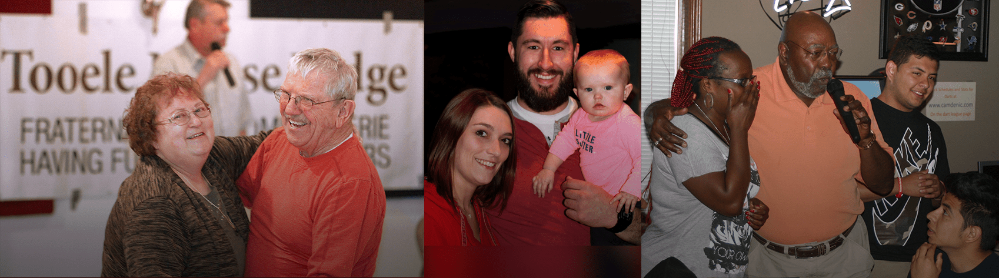

About Us
You may have heard the saying, “A burden heavy to one is borne lightly by many.” This is at the core of the Moose organization and what makes us unique in our Lodges, local communities and charitable “cities” that we support. Our roots can be traced to 1888 and the founder of the Moose, Dr. Henry Wilson, who successfully established the first Lodge in Louisville, Kentucky. In the early years, the Moose was to serve a modest goal of offering men an opportunity to gather socially, to care for one another's needs and celebrate life together.
Since those early years, our fraternal organization rapidly expanded to include valuable service to our communities, care for children and teens in need at Mooseheart Child City & School , a 1,000-acre campus, located 40 miles west of Chicago and care for our senior members at Moosehaven, a 70-acre retirement community near Jacksonville, Florida.
With a membership of over 1,000,000 members, our presence is felt in over 1,500 communities across all 50 states and four Canadian provinces, plus Great Britain. The Moose organization contributes between $75 to $100 million worth of community service (counting monetary donations, volunteer hours worked and miles driven) annually.
In addition to Mooseheart and Moosehaven, the Moose Fraternity’s Heart of the Community effort is multifaceted with internally developed programs like Tommy Moose. Tommy Moose aids in helping children overcome fears and anxiety during times of stress. Donated to law enforcement, fire fighters and other emergency workers, Tommy Moose plush dolls are presented to children in various traumatic situations. The external focus of our service is directed towards many worthwhile national charities, a few of which are: Salvation Army, Safe Surfin’ USA Foundation, Big Brothers-Big Sisters, and St. Jude.
In our local Lodges, you will find a wide array of activities to participate in both as an individual and as a family. From holiday parties, dances, sports, themed dinners and live entertainment, the Moose has much to offer. Membership can mean different things to different people. You are the one determining what you want to get out of the organization, and what you want to give back.
The Moose is about celebrating life together, serving those in need within our local community, supporting our children at Mooseheart and standing by our senior members at Moosehaven.